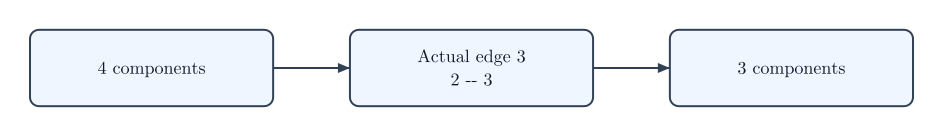
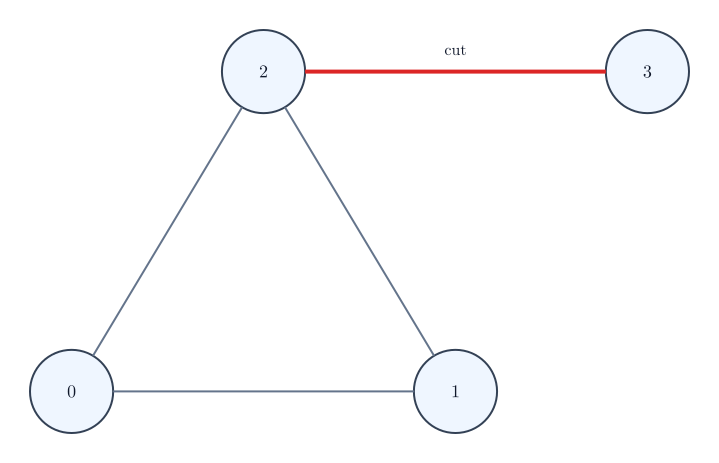
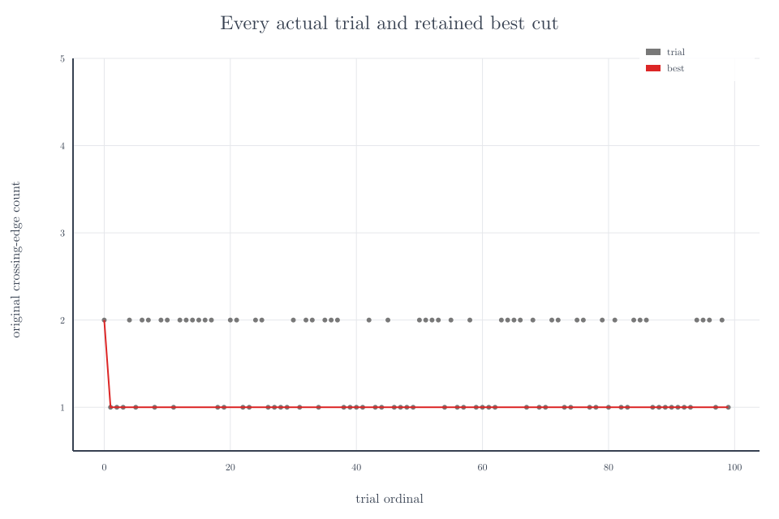
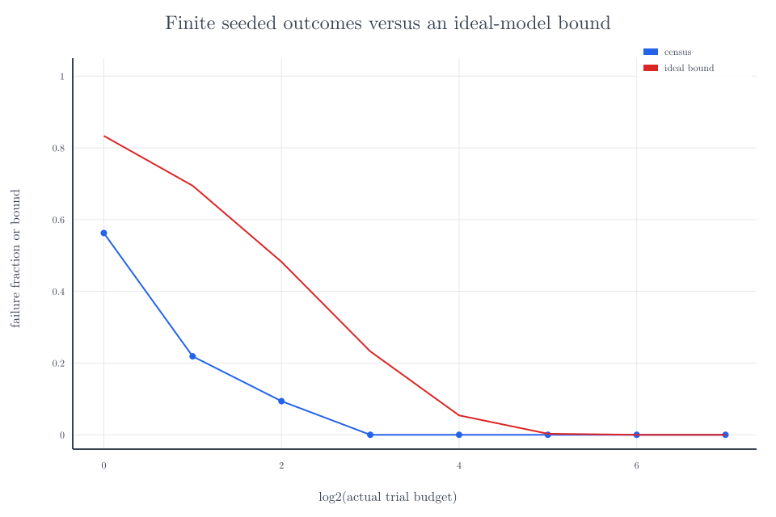

Karger's contraction: preserve a cut by avoiding its edges
Abstract
Random contraction samples crossing edges until two components remain, then counts the original edges between them. We inspect actual producing contractions, retain the original triangle-plus-bridge experiment, and distinguish a sampled candidate from a certified minimum. Loops, parallel edges and disconnected inputs are explicit. Native histories own component labels and every trial partition; finite seed censuses are separated from ideal-random success bounds.
Look at one actual merge
Use a triangle with a bridge to vertex3. A contraction joins the components of one sampled original edge. Labels in the following table are the minimum original vertex in each actual component after the merge, not internal union-find roots. The diagram reads the first actual selected edge and the resulting component count; no replay reconstructs the decision.
#include <dm/dm.hpp>
int main() {
std::filesystem::create_directories("build");
const std::vector<std::pair<std::size_t, std::size_t>> edges = {{0, 1},
{1, 2},
{2, 0},
{2, 3}};
const auto t = dm::algorithms::karger_trace(4, edges, 1, 7);
std::print("| contraction | groups before | selected original edge | crossing choices | chosen rank | " "groups after |\n| ---: | ---: | ---: | ---: | ---: | ---: |\n");
for (std::size_t i = 0; i < t.steps.size(); ++i) {
const auto &s = t.steps[i];
std::print("| {} | {} | {} | {} | {} | {} |\n", i, s.groups_before,
s.edge_index, s.crossing_count, s.chosen_rank, s.groups_after);
}
std::print("\n| contraction | vertex | actual component label |\n| ---: | ---: | ---: |\n");
for (std::size_t i = 0; i < t.steps.size(); ++i)
for (std::size_t v = 0; v < 4; ++v)
std::print("| {} | {} | {} |\n", i, v, t.steps[i].labels[v]);
const auto &s = t.steps.front();
const auto[u, v] = edges[s.edge_index];
dm::graphics::Diagram d;
d.node("before", {0, 0}, std::format("{} components", s.groups_before)).node("edge", {5, 0}, std::format("Actual edge {}\n{} -- {}", s.edge_index, u, v)).node("after", {10, 0}, std::format("{} components", s.groups_after)).edge("before", "edge").edge("edge", "after").save_svg("build/karger_merge.svg");
}| contraction | groups before | selected original edge | crossing choices | chosen rank | groups after |
|---|---|---|---|---|---|
| 0 | 4 | 3 | 4 | 3 | 3 |
| 1 | 3 | 0 | 3 | 0 | 2 |
| contraction | vertex | actual component label |
|---|---|---|
| 0 | 0 | 0 |
| 0 | 1 | 1 |
| 0 | 2 | 2 |
| 0 | 3 | 2 |
| 1 | 0 | 0 |
| 1 | 1 | 0 |
| 1 | 2 | 2 |
| 1 | 3 | 2 |

Derive the survival bound under ideal randomness
Fix a minimum cut of positive size k in a connected undirected multigraph. With r supervertices, each has degree at least k, so there are at least rk/2 crossing edges, counting multiplicity. A uniformly selected crossing edge hits the fixed cut with probability at most 2/r. Thus
For B independent ideal trials the failure probability is at most (1−2/(n(n−1))) to the power B. This is a model guarantee, not an observed confidence level for one deterministic pseudorandom seed. A disconnected graph instead has a zero cut, handled directly by the component partition when no crossing edges remain.
The native kernel keeps parallel-edge multiplicity, discards loops from contraction candidates, and rebuilds the input-ordered crossing list after each merge. It uses rejection before modulo reduction to remove finite-word modulo bias. For bound b, reject words below (2^64 mod b), then reduce an accepted word modulo b. This differs from the former raw-modulo implementation only when a rejection occurs; actual accepted words and draw counts are recorded.
Retain the original bridge experiment
The original call uses four vertices, edges (0,1),(1,2),(2,0),(2,3), one hundred trials and seed7. The table shows the actual retained candidate and its partition. Because this particular graph is connected and has a bridge, a returned crossing count of one is also a deterministic optimality certificate. That reasoning does not generalize to an arbitrary positive returned cut.
#include <dm/dm.hpp>
int main() {
std::filesystem::create_directories("build");
const std::vector<std::pair<std::size_t, std::size_t>> edges = {{0, 1},
{1, 2},
{2, 0},
{2, 3}};
const auto t = dm::algorithms::karger_trace(4, edges, 100, 7);
std::print("| cut size | completed trials | actual contractions | candidate edge checks | cut edge " "checks | random draws |\n| ---: | ---: | ---: | ---: | ---: | ---: |\n| {} | {} | {} | {} | " "{} | {} |\n",
t.result.cut_size, t.work.trials, t.work.contractions,
t.work.candidate_edge_checks, t.work.cut_edge_checks,
t.work.random_draws);
std::print("\n| vertex | actual retained side |\n| ---: | --- |\n");
for (std::size_t v = 0; v < 4; ++v)
std::print("| {} | {} |\n", v,
std::find(t.result.side_a.begin(), t.result.side_a.end(), v) !=
t.result.side_a.end() ? "A" : "B");
if (t.result.cut_size != 1)
throw std::runtime_error("bridge minimum");
dm::graphics::Diagram d;
dm::graphics::DiagramNodeStyle style;
style.width = 1.3;
style.circle = true;
const dm::graphics::DiagramPoint positions[] = {{0, 0}, {6, 0}, {3, 5},
{9, 5}};
for (std::size_t v = 0; v < 4; ++v)
d.node(std::to_string(v), positions[v], std::to_string(v), style);
for (auto[u, v] : edges) {
const bool a =
std::find(t.result.side_a.begin(), t.result.side_a.end(), u) !=
t.result.side_a.end(), b =
std::find(t.result.side_a.begin(), t.result.side_a.end(), v) !=
t.result.side_a.end();
dm::graphics::DiagramStroke stroke;
stroke.color =
a != b ? dm::graphics::RGB{220, 38, 38}
: dm::graphics::RGB{100, 116, 139};
stroke.width = a != b ? 4 : 2;
d.link(std::to_string(u), std::to_string(v), a != b ? "cut" : "", stroke);
}
d.save_svg("build/karger_original.svg");
}| cut size | completed trials | actual contractions | candidate edge checks | cut edge checks | random draws |
|---|---|---|---|---|---|
| 1 | 100 | 200 | 800 | 400 | 200 |
| vertex | actual retained side |
|---|---|
| 0 | A |
| 1 | A |
| 2 | A |
| 3 | B |

Count loops and parallel edges correctly
Self-loops never cross a partition. Every parallel record crossing the sides counts once. Isolated vertices belong to the original vertex set and can yield a nontrivial zero cut. For reproducibility, side A is the actual component containing vertex0, both sides are sorted, and equal best cuts retain the first trial's partition. A returned partition is always nonempty on both sides for n at least two.
#include <dm/dm.hpp>
int main() {
std::filesystem::create_directories("build");
std::print("| control | cut | side A size | side B size |\n| --- | ---: | ---: | ---: |\n");
const auto show =
[](const char *name, std::size_t n,
const std::vector<std::pair<std::size_t, std::size_t>> & e) {
const auto r = dm::algorithms::karger_min_cut(n, e, 16, 7);
std::print("| {} | {} | {} | {} |\n", name, r.cut_size, r.side_a.size(),
r.side_b.size());
};
show("parallel plus loops", 2, {{0, 0}, {0, 1}, {0, 1}, {1, 1}});
show("all isolates", 3, {});
show("disconnected", 5, {{0, 1}, {1, 2}, {2, 0}, {3, 4}});
bool cap = false, invalid = false;
try {
(void) dm::algorithms::karger_trace(2, {{0, 1}}, 1, 7, {3, 1, 2});
} catch (const std::length_error &) {
cap = true;
}
try {
(void) dm::algorithms::karger_min_cut(2, {{0, 2}}, 1);
} catch (const std::invalid_argument &) {
invalid = true;
}
if (!cap || !invalid)
throw std::runtime_error("admission guards");
std::print("\nOne-short history admission and an invalid endpoint reject.\n");
const auto t =
dm::algorithms::karger_trace(4, {{0, 1}, {1, 2}, {2, 0}, {2, 3}}, 100, 7);
std::vector<double> x, y, best;
std::size_t running = 99;
for (std::size_t i = 0; i < t.trials.size(); ++i) {
running = std::min(running, t.trials[i].cut_size);
x.push_back(i);
y.push_back(t.trials[i].cut_size);
best.push_back(running);
}
auto p = dm::graphics::RPlot::create();
p.points(x, y, "trial", {120, 120, 120}, 3).line(x, best, "best",
{220, 38, 38}, 2).title(
"Every actual trial and retained best cut").x_label("trial ordinal").y_label("original crossing-edge count").y_limits(.5, 5).save_svg("build/karger_controls.svg");
}| control | cut | side A size | side B size |
|---|---|---|---|
| parallel plus loops | 2 | 1 | 1 |
| all isolates | 0 | 1 | 2 |
| disconnected | 0 | 3 | 2 |
One-short history admission and an invalid endpoint reject.

A finite seed census is evidence, not a confidence certificate
The following complete census uses seeds0 through31 for each trial budget on the same four-vertex graph. The exact minimum is one by the bridge argument. Observed failure fraction is compared with the ideal independent-trial upper bound, which need not bound every finite deterministic seed census. The graph and all budgets are controlled inputs, so no external dataset is needed.
#include <dm/dm.hpp>
int main() {
std::filesystem::create_directories("build");
const std::vector<std::pair<std::size_t, std::size_t>> edges = {{0, 1},
{1, 2},
{2, 0},
{2, 3}};
std::vector<double> x, observed, bound;
std::print("| trial budget | complete seeds | failures to find one | observed fraction | ideal-model " "failure bound |\n| ---: | ---: | ---: | ---: | ---: |\n");
for (std::size_t budget = 1; budget <= 128; budget *= 2) {
std::size_t failures = 0;
for (std::uint64_t seed = 0; seed < 32; ++seed)
failures +=
dm::algorithms::karger_min_cut(4, edges, budget, seed).cut_size !=
1;
const double fraction =
failures / 32., upper = std::pow(1. - 2. / (4. * 3.), budget);
std::print("| {} | 32 | {} | {:.9f} | {:.12e} |\n", budget, failures,
fraction, upper);
x.push_back(std::log2(budget));
observed.push_back(fraction);
bound.push_back(upper);
}
auto p = dm::graphics::RPlot::create();
p.line(x, observed, "census", {37, 99, 235}, 2).points(x, observed, "",
{37, 99, 235}, 4).line(x, bound, "ideal bound", {220, 38, 38}, 2).title("Finite seeded outcomes versus an ideal-model bound").x_label("log2(actual trial budget)").y_label("failure fraction or bound").y_limits(-.04, 1.05).save_svg("build/karger_profile.svg");
}| trial budget | complete seeds | failures to find one | observed fraction | ideal-model failure bound |
|---|---|---|---|---|
| 1 | 32 | 18 | 0.562500000 | 8.333333333333e-01 |
| 2 | 32 | 7 | 0.218750000 | 6.944444444444e-01 |
| 4 | 32 | 3 | 0.093750000 | 4.822530864198e-01 |
| 8 | 32 | 0 | 0.000000000 | 2.325680393614e-01 |
| 16 | 32 | 0 | 0.000000000 | 5.408789293240e-02 |
| 32 | 32 | 0 | 0.000000000 | 2.925500161866e-03 |
| 64 | 32 | 0 | 0.000000000 | 8.558551197080e-06 |
| 128 | 32 | 0 | 0.000000000 | 7.324879859303e-11 |

The default zero trial argument selects the legacy n² ceil(log n) schedule with checked products. Positive budgets run every trial. Graph endpoints and complete n+m/trial ceilings are checked before graph copies or union-find allocation. Trace defaults admit a million input records, a million trials and a million online history records; zero disables the corresponding optional cap. A contraction or completed-trial snapshot charges n+1 records before its captured operation. Capacities, bytes and peak RAM are excluded. Failures expose no partial result.
Ranked path-compressed union-find gives expected word work O(B(n+(n+1)m alpha(n))) for this repeated full-edge-scan implementation, with O(n+m) working/output storage. Capturing n labels per contraction/trial adds up to quadratic-per-trial owned records and associated observation work; it is not a free trace. Random draw counts include rejection words, while edge-check counters exclude validation, union-find internals and history copies.
Independent exact cut enumeration checked all 64 four-vertex simple graphs,
1,024 trial partitions and 1,920 actual contractions, including candidate ranks,
accepted-word modulo mapping and canonical component labels. A further 1,024
seeded studies matched the frozen original partitions and cut sizes when the
ordinary draws required no rejection. These finite checks do not turn a
randomized candidate into an optimality certificate. The shared ten-report build
passed 131 native tests, 38 directly instrumented address/undefined-behaviour
sanitizer tests, 89 compiled public examples, documentation coverage for all 388
scoped definitions and ten representative clangd hovers. All four complete C++
report programs executed successfully and their native figures were visually
reviewed. Batch receipts are retained under
build/mepml-conversion/batch-174-183/.
Reference
David R. Karger (1993), “Global Min-cuts in RNC, and Other Ramifications of a Simple Min-Cut Algorithm”, SODA,21–30; author's 1992 preprint. This report implements the simple unweighted multigraph contraction process, not the later recursive Karger–Stein algorithm.